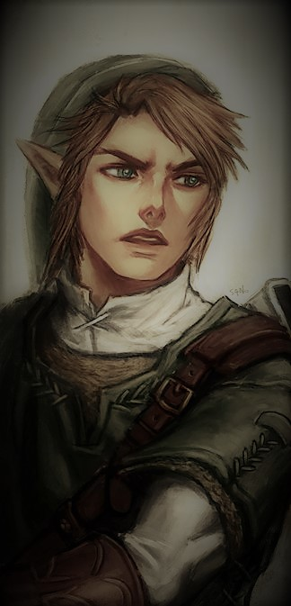
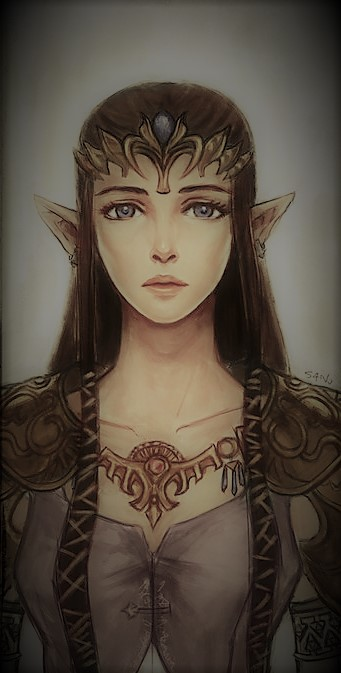
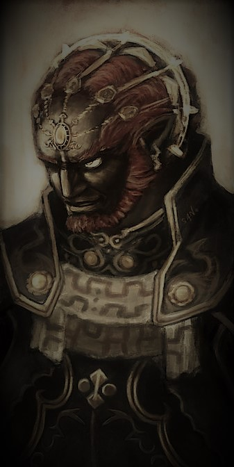

Personajes Principales
Link - El heroe elegido
Link es el nombre que comparten los principales protagonistas de la serie The Legend of Zelda. Existen muchas encarnaciones de Link, cada una de ellas poseedora del Espíritu del Héroe, y algunas de ellas también están emparentadas por la sangre. Son elegidos por las Diosas para proteger la tierra del mal siempre que se considere necesario. En la mayoría de los juegos de Zelda, sus aventuras tienen lugar en Hyrule, viajando por la tierra, recogiendo objetos importantes y derrotando a una gran variedad de enemigos mientras intentan salvar tanto a la princesa Zelda como a su reino de las garras de Ganon, Vaati u otros villanos.
Zelda - La princesa real
Zelda es la encarnación mortal de la diosa Hylia. Como portadoras de su sangre divina, sus descendientes femeninas suelen llevar su nombre. suelen llevar su nombre y son siempre las princesas herederas de Hyrule a lo largo de su historia. Varias princesas de la línea de sangre son también poseedoras de la Trifuerza de la Sabiduría, imbuida de la esencia de la diosa Nayru. La esencia de Nayru otorga a cada Zelda sabiduría divina, que les permite discernir las decisiones más sabias, especialmente en situaciones relacionadas con el bienestar de los demás. decisiones más sabias, especialmente en situaciones relacionadas con el bienestar de Hyrule. Les otorga un sinfín de habilidades místicas. místicas, incluida la capacidad de curar a otros.
Ganon - La maldad rencarnada
Ganon es la poseedora de la Trifuerza del Poder, imbuida de la esencia de la Diosa Din. Esta reliquia divina hace a Ganon inimaginablemente fuerte y le otorga un poder místico ilimitado, lo que le convierte en una grave amenaza para la tierra de Hyrule y para el mundo. Además, Ganon es la fuente de la oscuridad. Como dice la profecía, el único capaz de derrotar a Ganon es el Héroe elegido por las Diosas. Como manifestación del odio del Demise hacia la Diosa y su Héroe Elegido (o, según la Historia de Hyrule, la reencarnación del propio Demise). Ganon está destinado a reencarnarse eternamente para dominar el mundo.